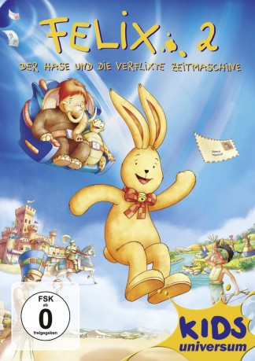

#3427 Felix 2 - Der Hase und die verflixte Zeitmaschine
 
 IMDB-Wertung: 5.5 / 10
IMDB-Wertung: 5.5 / 10  Metascore: 0
Metascore: 0 
Felix, der geliebte Kuschelhase von Sophie, macht an einem verregneten Sonntag mit der ganzen Familie einen Ausflug ins Museum. Als Sophies Vater einen weitschweifigen Vortrag über Nofretete im Alten Ägypten hält, langweilt sich Felix ein wenig. Neugierig begibt er sich auf die Suche nach spannenderen Objekten. In einem Nebenraum entdeckt er die virtuelle Zeitmaschine des kauzigen Professor Snork. Der Apparat funktioniert allerdings noch nicht ganz perfekt. Anstatt eine Show über vergangene Zeiten zu zeigen, verwandelt das Gerät zwei Ausstellungsstücke des Museums in lebende Wesen!
Jahr: 2006
Dauer: 75 Minuten
FSK: 0
Land: Deutschland Studio: UFATonspuren:
Untertitel:
Auflösung: 720p (1280x720) Größe: 1198 MB
Genre: Animation/Trick, Familie
Regisseur: Giuseppe Laganà
Drehbuch: Constanza Droop, Annette Langen, John Paisley, Mark Slater, Gabriele Walther
Soundtrack: Danny Chang
Darsteller:
 Barbara Rudnik als Nofretete
Barbara Rudnik als Nofretete- Gilbert Nash als Beaver
- Patrick Flecken als Felix
- Helmut Markwort als Nilpferd Hippo
 Sunnyi Melles als Gertrude
Sunnyi Melles als Gertrude Christiane Paul als Olabisi
Christiane Paul als Olabisi- Hans Werner Olm als Prof. Smork
- Domenic Redl als Wolli
- Serra Hirsch als Sophie - French
- Tobias John von Freyend als Zittergras
Datei: X:\Kinder Collections\Felix\Felix 2 - Der Hase und die verflixte Zeitmaschine (2006, FSK0, 1280x720).mkv seit 04.04.2016
Festplatte: Kinder-Filme+Trick
 Alle Filme aus Gruppe 'Kinder Collections\Felix'
Alle Filme aus Gruppe 'Kinder Collections\Felix'